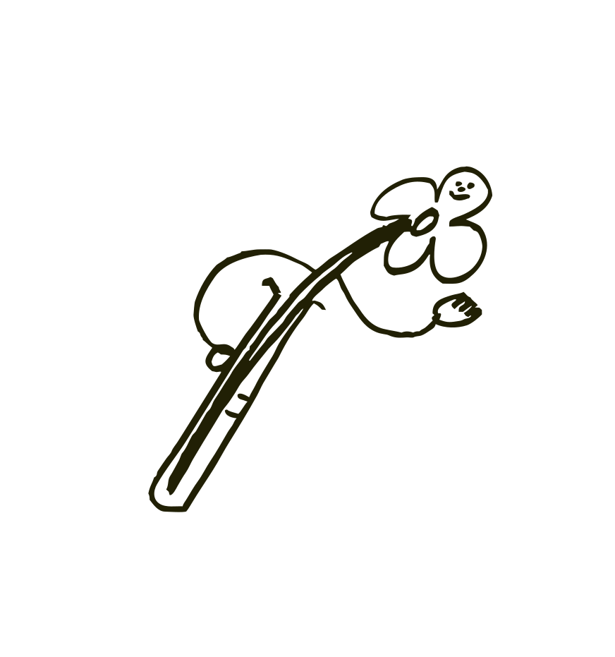
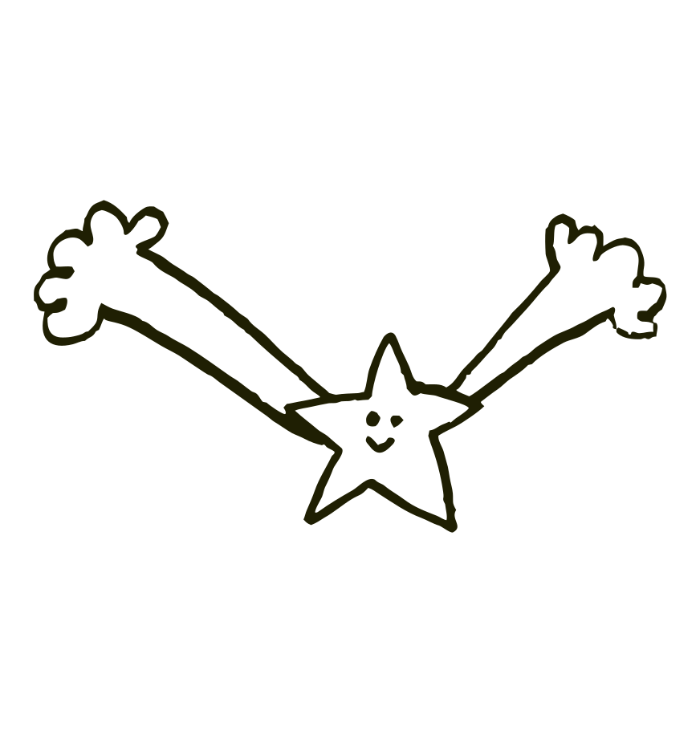
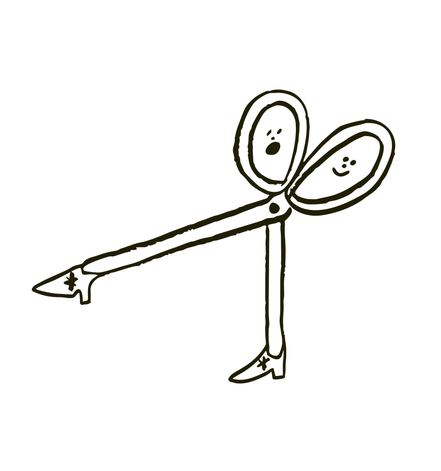
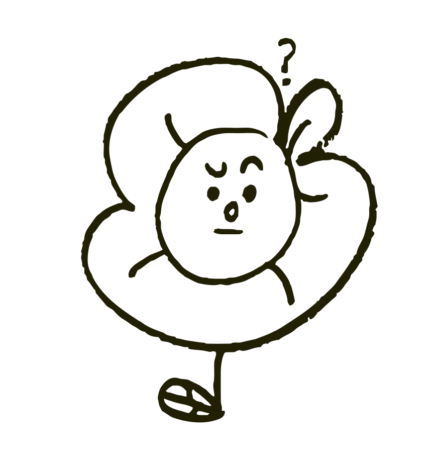
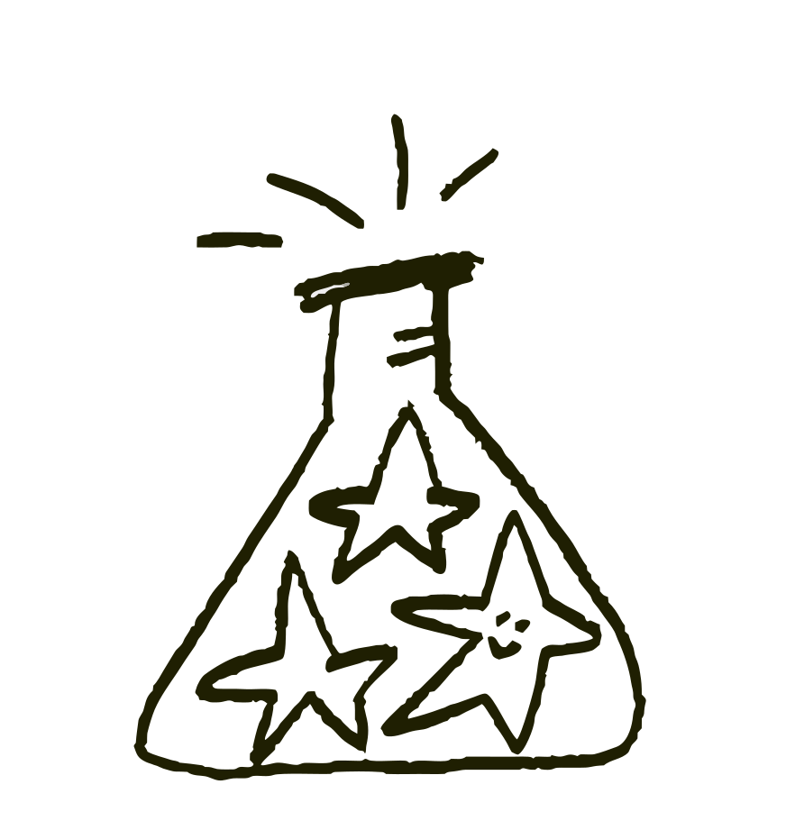
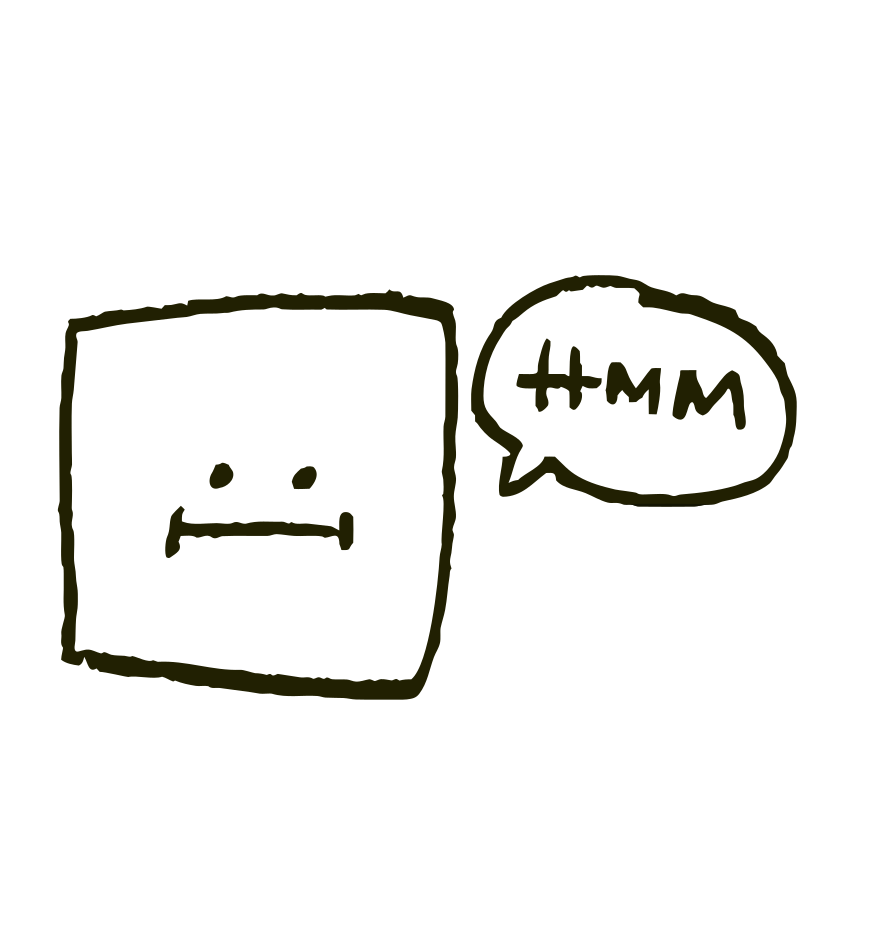
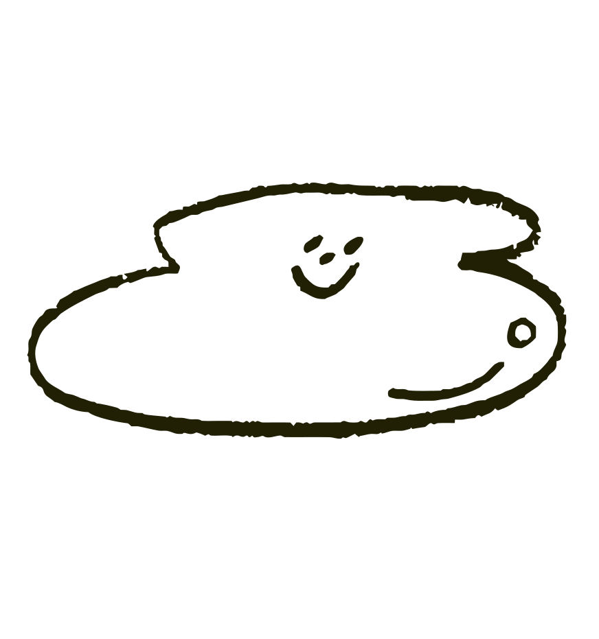

Nonsense Lab creates playful, structured art experiences for children aged 5–10 with special educational needs, while supporting parents with practical insight, confidence, and connection.
Creative workshops designed for children aged 5–10 with special educational needs. Each session encourages imagination, self-expression, sensory exploration, and confidence through art-based activities.
We help parents understand their child's creative process, communication style, and emotional world through observation, discussion, and practical take-home ideas.
We collaborate with schools, museums, farms, heritage sites, and community spaces to create meaningful learning experiences beyond the classroom.
We turn “I don’t know how to say it” into color, shape, texture, movement, and play.



A Creative Space Between
Learning, Play & Understanding
At Nonsense Lab, we believe creativity helps children express what words cannot always explain. Our workshops combine visual arts, sensory exploration, storytelling, movement, and reflection to support children with different learning needs in a safe, welcoming environment.
We are not a clinical therapy service. We are a creative learning space designed to help children explore, communicate, and grow — while helping parents better understand their child's unique way of seeing the world.
Our Vision, Mission & Values
Vision
To create a world where different ways of thinking, feeling, and expressing are understood, celebrated, and supported.
Mission
To provide playful, structured creative workshops that help children with special educational needs express themselves, build confidence, and connect with others — while giving parents tools and insight to support their child's growth.
We follow questions, ideas, textures, mistakes, and unexpected discoveries.

Every child's pace, preference, and communication style matters.

We use art as a language for expression, imagination, and connection.

We create low-pressure spaces where children can try, choose, and grow.

We help children, parents, and communities understand one another better.

Our Team
Nonsense Lab is led by artists, educators, and creative thinkers who believe art can open new ways of learning and connecting.
Sandy Wang
Co-Founder | Visual Artist | Educator
Sandy Wang has a background in visual arts, academic research, and education. Her practice explores how creativity can support learning, communication, and self-expression. At Nonsense Lab, Sandy designs thoughtful experiences that combine structure, imagination, and sensory exploration.
Un Cheng
Co-Founder | Artist | Art Historian | Educator
Un Cheng has a background in art history, visual arts, oil painting, and education. Her work brings together artistic practice, cultural understanding, and hands-on learning. At Nonsense Lab, Un develops creative workshops that help children engage with art, stories, places, and materials in meaningful ways.
Get in Touch
Interested in our workshops, school collaborations, or parent consultations? Send us a message!